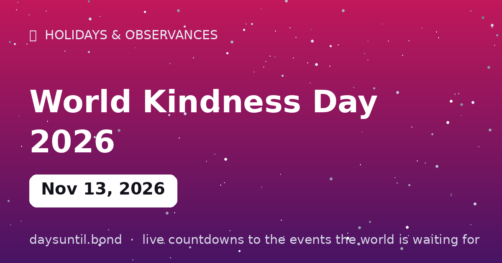

How Many Days Until World Kindness Day 2026?
World Kindness Day 2026 falls on Friday, November 13, 2026.
As of October 24, 2026: 20 days to go — 2 weeks and 6 days, 15 weekdays (5 weekend days), about 480 hours.

Quick facts
| Date | Friday, November 13, 2026 |
|---|---|
| Category | Holiday / observance |
About World Kindness Day 2026
World Kindness Day 2026 falls on Friday, November 13, 2026. November 13: a day to deliberately choose kindness — small acts, big ripples. Launched in 1998 by the World Kindness Movement, now observed in 30+ countries.
The live counter above counts down the days, hours and minutes to World Kindness Day 2026 in your local time zone, and switches to a 'days since' counter once it arrives.
Why is World Kindness Day on 13 November?
World Kindness Day is held every year on 13 November. The date was chosen by the World Kindness Movement, a coalition of kindness organisations from a number of countries, which launched the observance in 1998 with the deliberate aim of keeping it non-national, non-religious and non-political.
That neutrality is the point of the whole thing. Unlike a national holiday, there is no state attached to it, no flag and no founder being commemorated — which is also why it has spread to dozens of countries without being claimed by any of them.
Where the observance came from
The movement traces back to Japan's Small Kindness Movement, begun in the 1960s and built around the unfashionable idea that small, unrecorded acts matter more than grand gestures. Delegates from national kindness organisations met in Tokyo in the late 1990s, formed the World Kindness Movement, and 13 November was adopted as the shared date.
It has grown mostly by adoption rather than promotion: schools, councils and workplaces pick it up because it is easy to run a day around, not because anyone is obliged to.
In 2026 it falls on Friday the 13th
A coincidence worth noting, because 2026 is one of the years where World Kindness Day lands on a date that Western superstition has spent centuries calling unlucky. 13 November 2026 is a Friday, which means this year World Kindness Day and Friday the 13th are the same 24 hours.
It is, all things considered, a good pairing. The date that folklore marks as the unluckiest of the year is also the one set aside for deliberately doing something decent — and the juxtaposition has not been lost on the people who organise events around it.
Is it a public holiday?
No. World Kindness Day is not a public holiday anywhere, and there is no movement to make it one. Nothing closes, no one is given the day off, and you would be entirely forgiven for not knowing it was happening.
That is by design rather than neglect — the organisers have consistently framed it as a day of informal action, not a day of observance. It works precisely because participation is voluntary and unenforced.
How it is actually observed
Mostly in institutions that already have a captive audience: schools run kindness assemblies or classroom activities, councils and libraries promote small events, and some workplaces use the date to launch volunteering or wellbeing initiatives. Individuals tend to mark it with something small and specific rather than something organised — paying for a stranger's coffee, writing to someone they have lost touch with, or doing the neighbourly thing they have been putting off.
The 2010s saw the format shift online, with hashtag campaigns and pledge drives. Whether that counts as participation is arguable, but it is what made the date recognisable to a wider audience.
What the research actually says about kindness
The honest version: there is a substantial body of psychological research on prosocial behaviour, and it consistently finds associations between doing things for others and reported wellbeing. Studies of spending on others rather than oneself, and of volunteering, find measurable — though generally modest — associations with mood and life satisfaction.
The caveat matters. Most of this work is correlational, effect sizes are small, and the direction of causation is not settled: people who are already well may simply be more inclined to act kindly. Also worth noting is that performing kindness because you read it would improve your own wellbeing tends to blunt the effect. Treat the research as a reason to expect a small lift, not as a self-improvement protocol.
Why a day for it, though?
The reasonable criticism of any awareness day is that it compresses something you should do anyway into a single date and then lets everyone off the hook for the rest of the year. There is something to that.
The counter-argument is narrower and more defensible: most people intend to be more generous, more patient and more attentive than they manage to be, and a fixed date acts as a reminder rather than a substitute. The day is useful to the extent that it restarts a habit, and useless to the extent that it replaces one.
World Kindness Day in other years
The date is fixed at 13 November, so only the weekday moves. Here is how the next three fall.
Note that a weekend observance shifts most organised events — schools and workplaces typically move their activities to the nearest Friday or Monday.
| Year | Date | Weekday | Note |
|---|---|---|---|
| 2026 | 13 November | Friday | Also Friday the 13th |
| 2027 | 13 November | Saturday | Weekend — events move to Fri 12 or Mon 15 |
| 2028 | 13 November | Monday | Weekday |